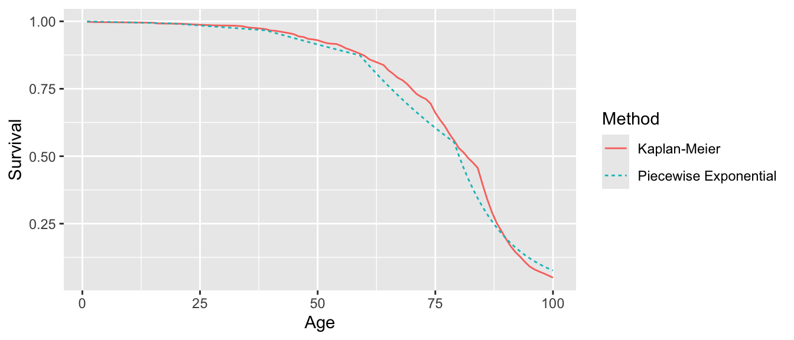

Piecewise Exponential
Suppose we do not know the shape of the baseline hazard. One solution is to estimate it empirically by a piecewise flat function.
In the example above, we set the breakpoints of our piecewise flat function at the values 1, 2, 3, and 4. Between these time values, we might assume survival follows an Exponential distribution. Thus, this is known as a piecewise exponential model.
Data
We illustrate the piecewise exponential on simulated mortality data where each row is a person and time is the age at death. I retrieved 2023 U.S. age-specific mortality data from an NCHS report. I then used these rates to generate deaths for a hypothetical population that experiences these rates, available in deaths.csv.
deaths <- read_csv("https://ilundberg.github.io/eventhistory/assets/deaths.csv")Estimation
We will consider a piecewise exponential for human survival with breaks at age 20, 40, 60, and 80. To carry out this estimation will require a data manipulation that we first motivate.
Consider someone who dies ata ge 63. Their data provide evidence about several piecewise hazard rates:
- they survived from age 0 to 20, which informs \(\lambda_{0-20}\)
- they survived from age 20 to 40, which informs \(\lambda_{20-40}\)
- they survived from age 40 to 60, which informs \(\lambda_{40-60}\)
- they survived from age 60 to 62 and then died, which informs \(\lambda_{60-80}\)
- their data are not informative about \(\lambda_{80+}\)
Corresponding to the intuition above, we will split their observation (in one row) into an observation spread over multiple rows: one per period that their observation informs. The survSplit() function does this for us.
splitted <- survSplit(
Surv(age, event = died) ~ 1,
data = deaths,
# Cut says where the cutpoints will be
# for the piecewise Exponential
cut = seq(20,80,20)
) tstart age died
1 0 20 0
2 20 40 0
3 40 60 0
4 60 80 0
5 80 87 1
6 0 20 0In the splitted data, we can see that person 1 is now split across 5 rows.
- For the interval starting at
tstart = 0, they survived 20 years to age20and then were censored (died == 0) - For the interval starting at
tstart = 20, they survived 20 years to age40and then were censored (died == 0) - …
- For the interval starting at
tstart = 80, they survived 7 years to age 87 and then died (died == 1)
To model survival with the piecewise exponential, we allow each person-period to serve as an observation. We then fit the model with tstart as a factor variable interacted with any predictors, to allow allow coefficients to differ categorically across the specified intervals.
expo_fit <- survreg(
Surv(time = age - tstart, event = died) ~ factor(tstart),
data = splitted,
dist = "exponential"
)We can see the coefficients of this fit which capture the linear changes in the log of the scale (1 / rate). These are hard to interpret.
beta <- coef(expo_fit) (Intercept) factor(tstart)20 factor(tstart)40 factor(tstart)60
7.819938 -1.190828 -2.532853 -4.046438
factor(tstart)80
-5.457709 Recall that survreg models the log scale of the distribution, where scale = 1 / rate. We can convert to rates in each period.
rates_from_beta <- c(
age_under_20 = 1 / exp(beta["(Intercept)"]),
age_20_40 = 1 / exp(sum(beta[c("(Intercept)", "factor(tstart)20")])),
age_40_60 = 1 / exp(sum(beta[c("(Intercept)", "factor(tstart)40")])),
age_60_80 = 1 / exp(sum(beta[c("(Intercept)", "factor(tstart)60")])),
age_80plus = 1 / exp(sum(beta[c("(Intercept)", "factor(tstart)80")]))
) [,1]
age_under_20.(Intercept) 0.0004016468
age_20_40 0.0013213396
age_40_60 0.0050564820
age_60_80 0.0229715207
age_80plus 0.0942100098We can see that the rate of death is initially very low and then gets much higher at older ages.
Visualization
A good way to visualize results is to define data to predict and then visualize the hazard and survival functions at those ages. For example, we might visualize at ages 1–100. In the data, we have to define the tstart that corresponds to each age. You can also create the to_predict data with survsplit if you prefer.
to_predict <- tibble(
age = 1:100,
tstart = case_when(
age < 20 ~ 0,
age < 40 ~ 20,
age < 60 ~ 40,
age < 80 ~ 60,
age >= 80 ~ 80
)
)We can then predict the hazard and visualize.
rates <- to_predict |>
mutate(
xb = predict(expo_fit, newdata = to_predict, type = "linear"),
rate = 1 / exp(xb)
)
rates |>
ggplot(aes(x = age, y = rate)) +
geom_step()
To calculate the survival curve is slightly more complicated. To survive to each age, you have to survive all previous ages. We can convert our model to a predicted probability of survival by each age and then use cumprod to take the probability of survival up to each age value.
survival_estimates <- rates |>
mutate(
p_survives_year = pexp(1, rate = rate, lower.tail = FALSE),
survival = cumprod(
p_survives_year
)
)
survival_estimates |>
ggplot(aes(x = age, y = survival)) +
geom_line() +
labs(y = "Survival", x = "Age")
You can see in the graph that this is a piecewise function: it has sharp corners at every cutpoint (20, 40, 60, 80).
We can also see that this piecewise Exponential is reasonably close to the Kaplan-Meier estimates.
Code
survfit(Surv(age, event = died) ~ 1, data = deaths) |>
broom::tidy() |>
select(age = time, survival = estimate) |>
mutate(method = "Kaplan-Meier") |>
bind_rows(
survival_estimates |>
select(age, survival) |>
mutate(method = "Piecewise Exponential")
) |>
ggplot(aes(x = age, y = survival, color = method, linetype = method)) +
geom_line() +
labs(
x = "Age",
y = "Survival",
color = "Method",
linetype = "Method"
)
Closing thoughts
The piecewise exponential is simple (an exponential in each interval) but also flexible (can accomodate many hazard shapes). To use it well, you need to be careful about your survsplit that takes data where a row is a (unit) and converts it into data where a unit is a (unit \(\times\) period).